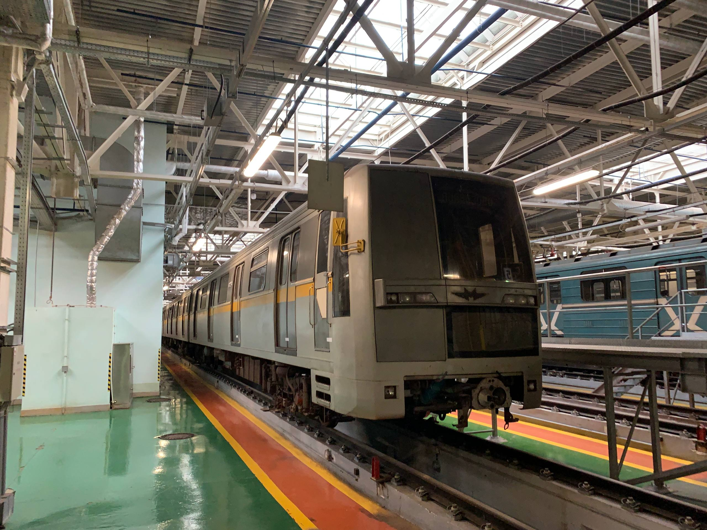
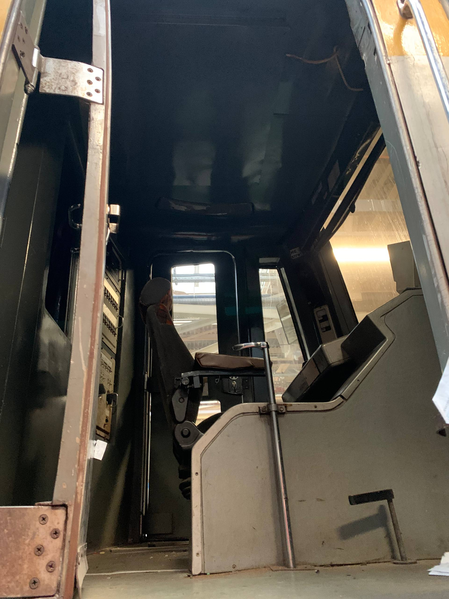
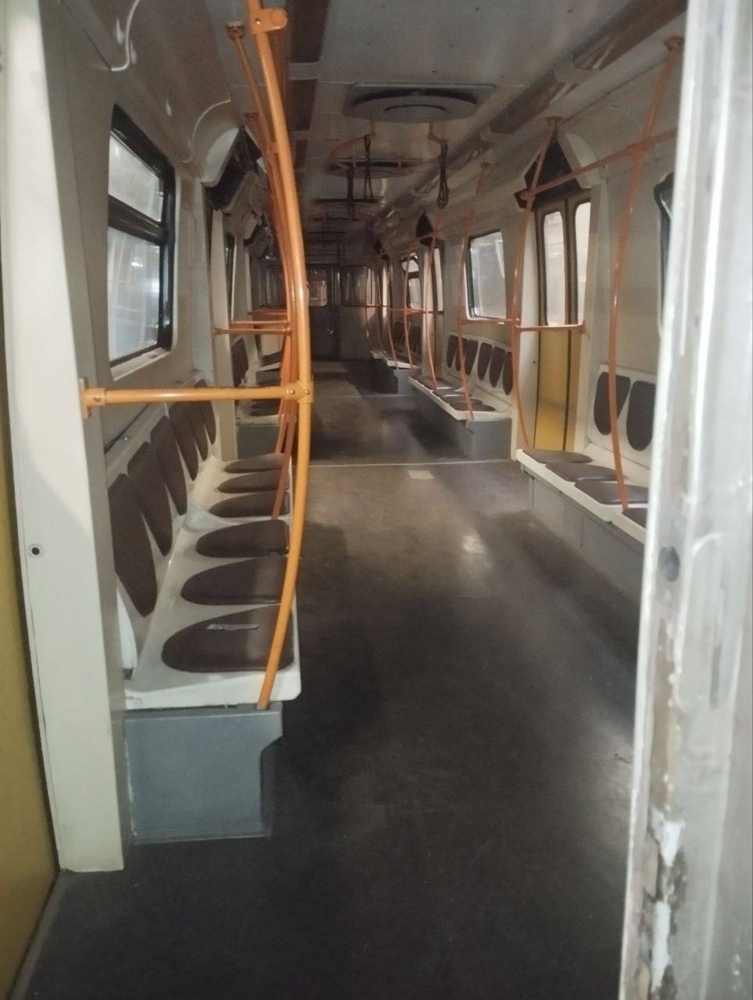

Живая история Яуза 0028-0035
Последний 4-вагонный состав асинхронной серии Яуза, который сейчас является единственным живым представителем этого семейства. Ранее базировался в ТЧ-15 «Печатники», ныне находится в ТЧ-16 «Митино».
История Яузы 0028-0035
Ранее этот состав ходил по ЛДЛ и КахЛ. После вывода парка из эксплуатации большая часть вагонов была утилизирована, но этот состав удалось спасти для истории.
Постройка
Состав был построен на Ленинградском вагоностроительном заводе (ЛВЗ).
Поступление в метрополитен
Состав поступил в метро для начала пассажирской эксплуатации.
Отправка на утилизацию
Состав был отправлен на утилизацию. Однако в процессе было принято решение сохранить вагоны.
Официальное решение о сохранении
Получен ответ, подтверждающий, что вагоны 0035, 0028, 0138 и 0141 предназначены для сохранения исторического наследия в качестве экспонатов.
Сохранившийся состав
📍 Текущее местонахождение
ТЧ-16 «Митино»
Поезд доступен только на экскурсиях в депо ТЧ-16 «Митино». Приписан к ТЧ-15 «Печатники».
📅 Историческая ценность
Единственный живой пример асинхронной Яузы. В официальном ответе подтверждено, что вагоны не подлежат выпуску на пассажирскую линию или парад поездов из-за конструктивных особенностей, они сохраняются исключительно как экспонаты.
Фотогалерея

В депо ТЧ-16.

Внутреннее убранство кабины.

Пассажирский салон.
Нажмите на фото для увеличения
Технические характеристики
| Параметр | Значение |
|---|---|
| Год постройки | 2004 |
| Завод-изготовитель | ЛВЗ (Ленинградский вагоностроительный завод) |
| Тип вагона | 81-720.1/721.1 (асинхронный тяговый привод) |
| Количество вагонов (исторически) | 7 |
| Нынешняя составность | 4 вагона (0028-0138-0141-0035) |
| Депо приписки | ТЧ-15 «Печатники» |
| Текущее состояние | Не эксплуатируется (музейный) |
| Длина вагона | 19 210 мм |
| Число сидячих мест | 56 |
| Общая вместимость | 288 человек |
"Яуза 0028-0035 — это последний живой свидетель асинхронного семейства. Сохранить его — значит сохранить кусочек истории ЛДЛ и КахЛ."